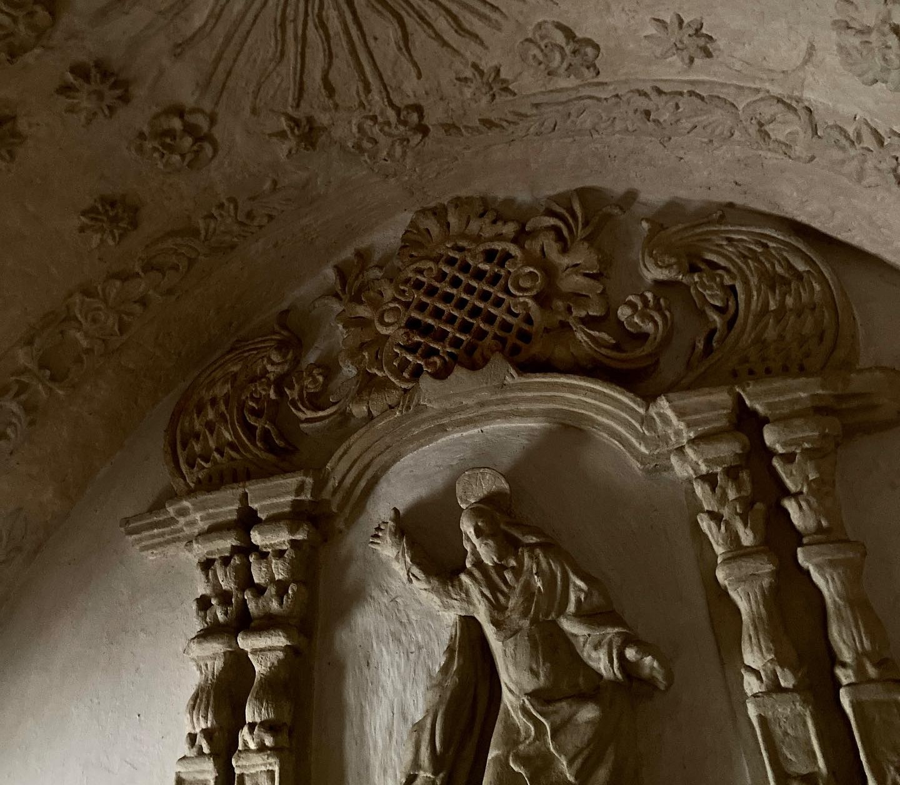
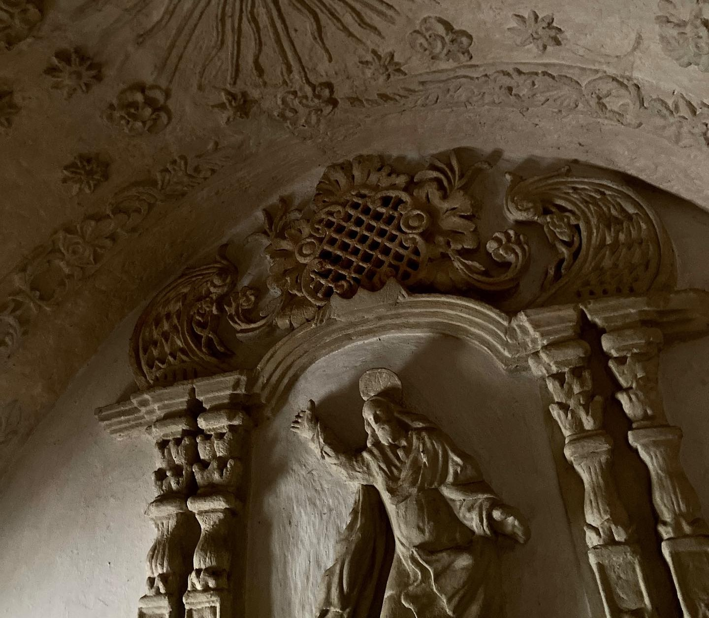
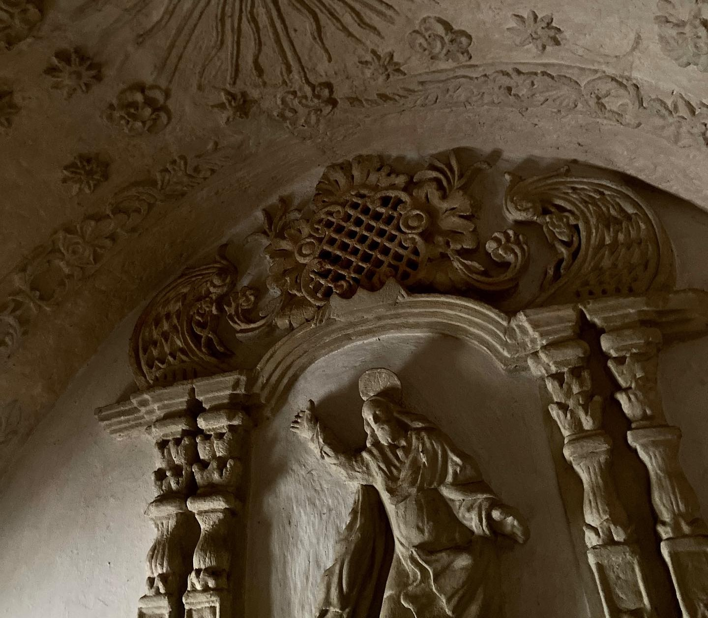
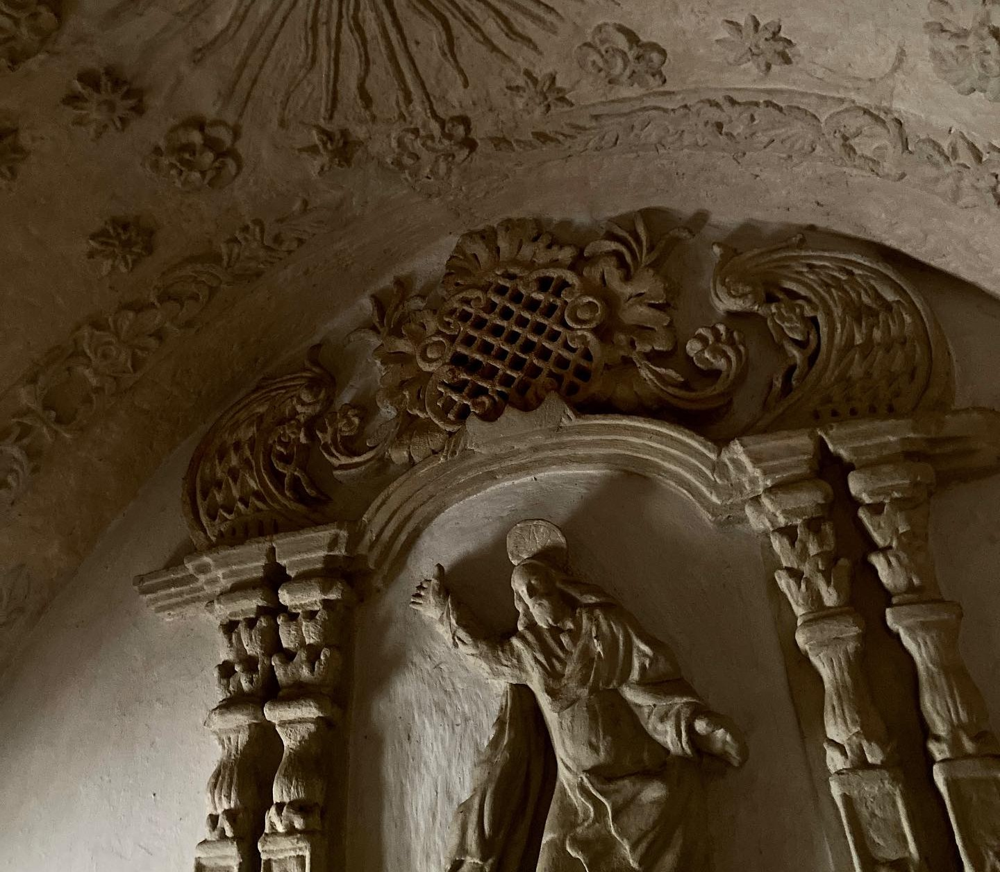

The Saint Vincent Ferrer Church in Dupax del Sur is one of the town’s most treasured landmarks, depicting both history and devotion. Built during the Spanish era, the church showcases classic stonework and enduring colonial architecture that has withstood the test of time. Its solemn interiors and graceful façade reflect centuries of faith, serving as a gathering place for the community and a symbol of spiritual strength. Dedicated to Saint Vincent Ferrer, the town’s patron saint, this church is not only a house of worship but also a cultural heritage site that highlights the rich traditions of Dupax del Sur.